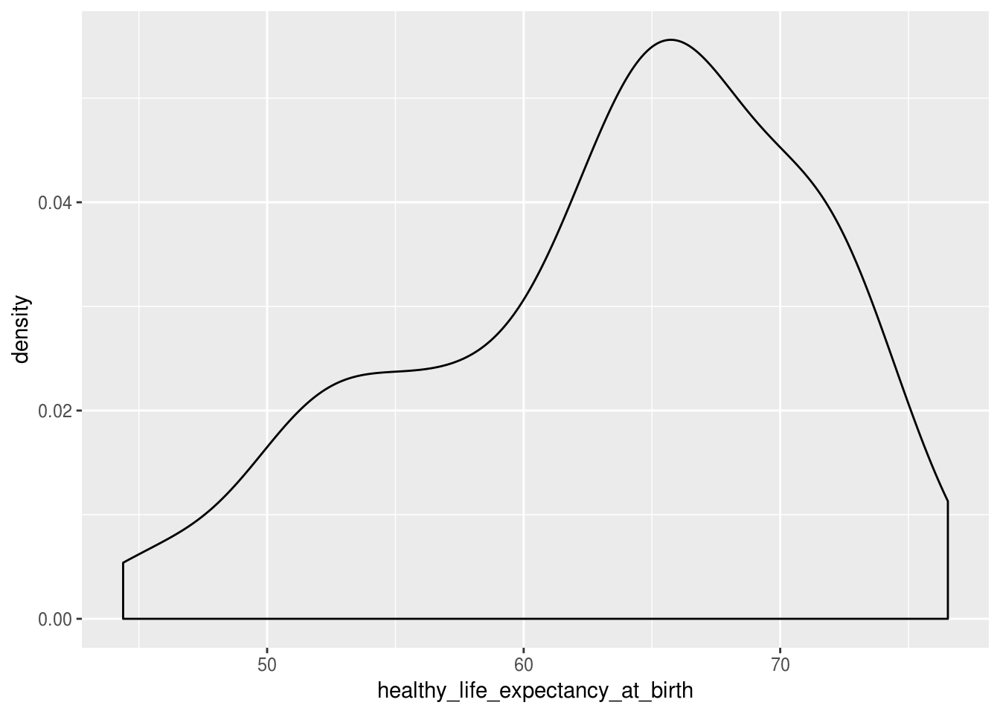
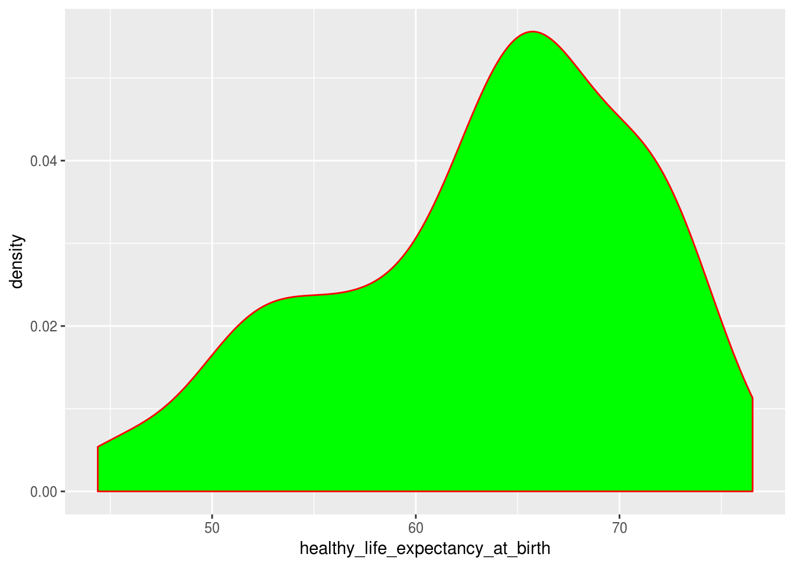
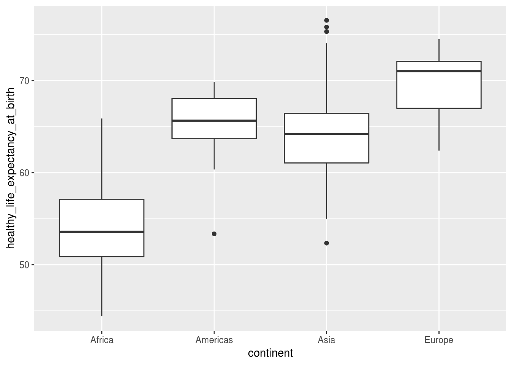
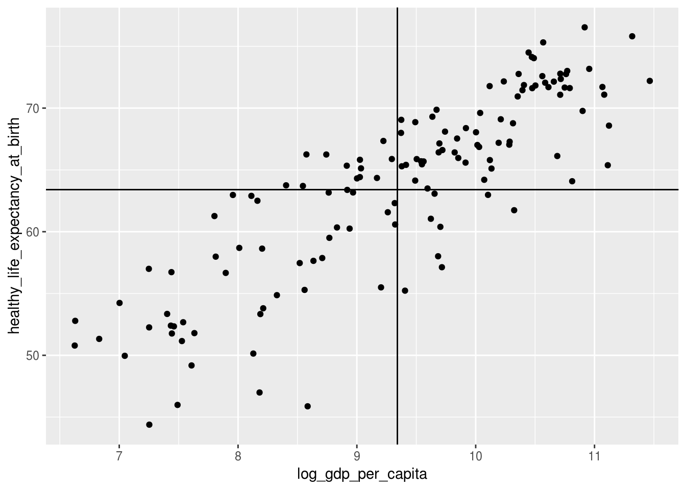
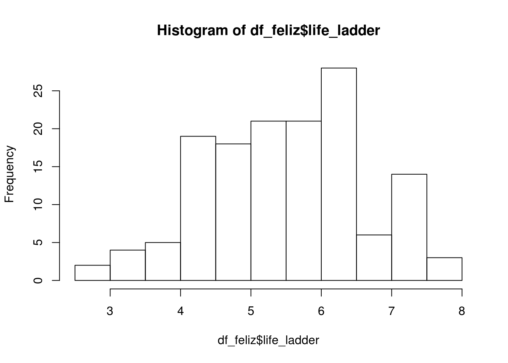
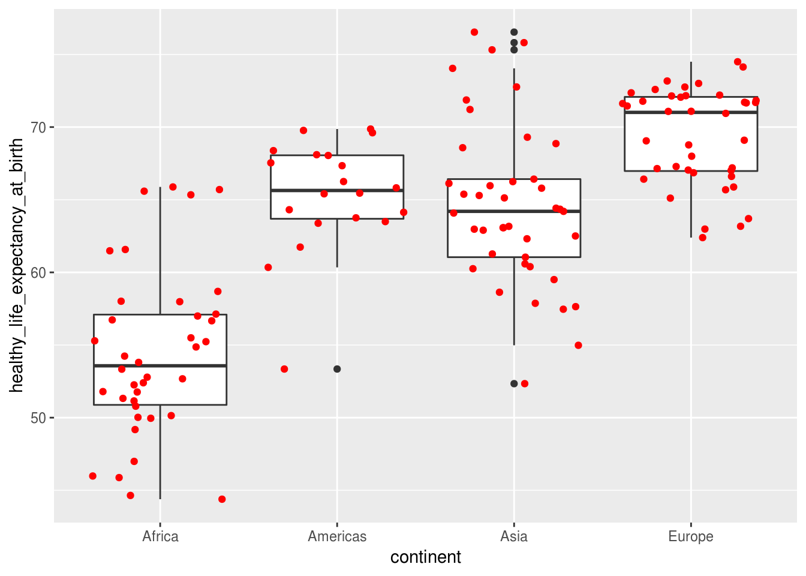
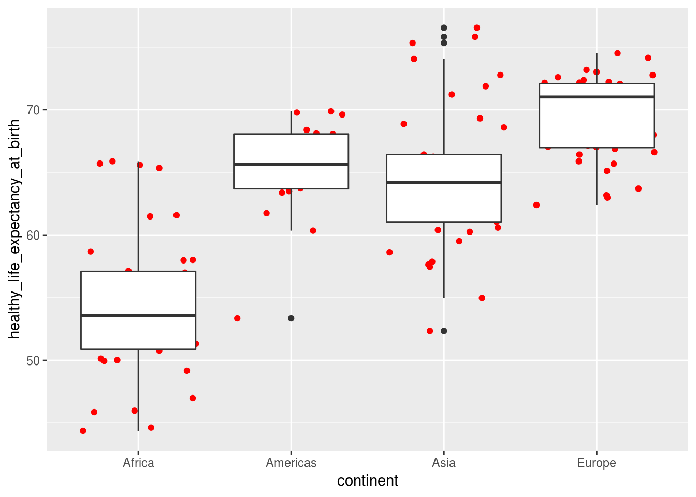
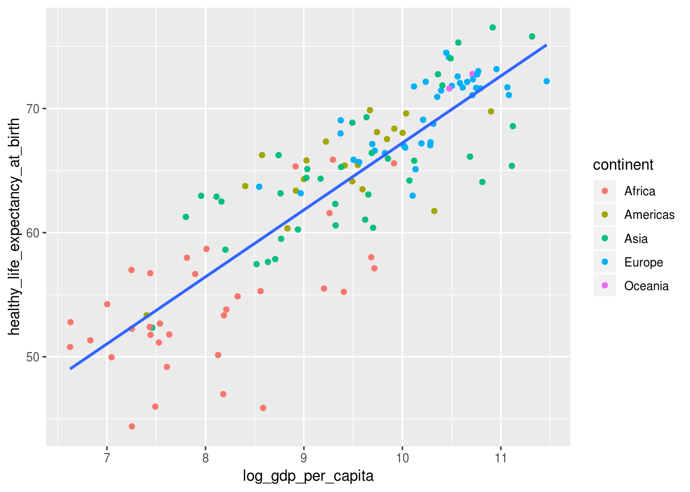

Módulo 2 Introdução ao ggplot2
Neste módulo, usaremos os seguintes pacotes:
library(tidyverse)
# vamos precisar do pacote janitor para limpar os nomes das colunas
library(janitor)
# o pacote readxl será usado para importar a planilha excel, visto que o
# readr não oferece suporte para arquivos xlsx
library(readxl)
# metadados gerais de países
library(countrycode)
# combinar varios graficos do ggplot2 em um so
library(patchwork) # devtools::install_github("thomasp85/patchwork")
# chequem se a versao dos seus pacotes é a mesma das minhas
sessionInfo()## R version 3.4.4 (2018-03-15)
## Platform: x86_64-pc-linux-gnu (64-bit)
## Running under: Linux Mint 18.2
##
## Matrix products: default
## BLAS: /usr/lib/openblas-base/libblas.so.3
## LAPACK: /usr/lib/libopenblasp-r0.2.18.so
##
## locale:
## [1] LC_CTYPE=pt_BR.UTF-8 LC_NUMERIC=C
## [3] LC_TIME=pt_BR.UTF-8 LC_COLLATE=pt_BR.UTF-8
## [5] LC_MONETARY=pt_BR.UTF-8 LC_MESSAGES=pt_BR.UTF-8
## [7] LC_PAPER=pt_BR.UTF-8 LC_NAME=C
## [9] LC_ADDRESS=C LC_TELEPHONE=C
## [11] LC_MEASUREMENT=pt_BR.UTF-8 LC_IDENTIFICATION=C
##
## attached base packages:
## [1] stats graphics grDevices utils datasets methods base
##
## other attached packages:
## [1] sp_1.2-5 brmap_0.0.5 treemap_2.4-2
## [4] leaflet_1.1.0 sunburstR_2.0.0 ggmap_2.7.900
## [7] sf_0.6-3 plotly_4.8.0 ggrepel_0.8.0
## [10] rbcb_0.1.5 patchwork_0.0.1 countrycode_1.00.0
## [13] readxl_1.1.0 janitor_1.1.1 bindrcpp_0.2.2
## [16] forcats_0.3.0 stringr_1.3.1 dplyr_0.7.6
## [19] purrr_0.2.5 readr_1.1.1 tidyr_0.8.1
## [22] tibble_1.4.2 ggplot2_3.0.0.9000 tidyverse_1.2.1
##
## loaded via a namespace (and not attached):
## [1] colorspace_1.3-2 rjson_0.2.15 class_7.3-14
## [4] rprojroot_1.3-2 snakecase_0.9.1 rstudioapi_0.7
## [7] DT_0.2 fansi_0.3.0 lubridate_1.7.4
## [10] xml2_1.2.0 mnormt_1.5-5 knitr_1.20
## [13] jsonlite_1.5 Cairo_1.5-9 broom_0.4.5
## [16] gridBase_0.4-7 png_0.1-7 shiny_1.0.5
## [19] compiler_3.4.4 httr_1.3.1 backports_1.1.2
## [22] assertthat_0.2.0 lazyeval_0.2.1 cli_1.0.0
## [25] later_0.7.3 htmltools_0.3.6 tools_3.4.4
## [28] igraph_1.2.1 gtable_0.2.0 glue_1.3.0
## [31] reshape2_1.4.3 Rcpp_0.12.18 cellranger_1.1.0
## [34] nlme_3.1-137 blogdown_0.3 crosstalk_1.0.0
## [37] psych_1.8.4 xfun_0.3 rvest_0.3.2
## [40] mime_0.5 zoo_1.8-2 scales_1.0.0.9000
## [43] hms_0.4.2 promises_1.0.1 parallel_3.4.4
## [46] RColorBrewer_1.1-2 yaml_2.1.19 curl_3.2
## [49] stringi_1.2.4 highr_0.6 e1071_1.7-0
## [52] spData_0.2.9.3 d3r_0.8.1 RgoogleMaps_1.4.1
## [55] rlang_0.2.1 pkgconfig_2.0.1 bitops_1.0-6
## [58] evaluate_0.10.1 lattice_0.20-35 bindr_0.1.1
## [61] htmlwidgets_1.2 labeling_0.3 tidyselect_0.2.4
## [64] plyr_1.8.4 magrittr_1.5 bookdown_0.7
## [67] R6_2.2.2 DBI_1.0.0 pillar_1.3.0
## [70] haven_1.1.2 foreign_0.8-70 withr_2.1.2
## [73] units_0.6-0 xts_0.10-0 modelr_0.1.2
## [76] crayon_1.3.4 utf8_1.1.4 formattable_0.2.0.1
## [79] rmarkdown_1.10 jpeg_0.1-8 grid_3.4.4
## [82] data.table_1.11.4 digest_0.6.15 classInt_0.2-3
## [85] xtable_1.8-2 httpuv_1.4.4.1 munsell_0.5.0
## [88] viridisLite_0.3.0 kableExtra_0.9.02.1 Dataset do módulo
Para este módulo, usaremos o dataset World Happiness Report, ou o Relatório Mundial da Felicidade, que é uma medição da felicidade publicado pela Rede de Soluções para o Desenvolvimento Sustentável da ONU (SDSN, na sigla em inglês). Leia o artigo na Wikipedia para mais informações.
# baixe o arquivo do endereco:
download.file("https://s3.amazonaws.com/happiness-report/2018/WHR2018Chapter2OnlineData.xls",
destfile = "felicidade.xls")# importar a planilha
df_pais <- read_excel("felicidade.xls", sheet = 1)
# limpar o nome das colunas
df_pais <- janitor::clean_names(df_pais)
# olhar dados
glimpse(df_pais)## Observations: 1,562
## Variables: 19
## $ country <chr> "Afgha...
## $ year <dbl> 2008, ...
## $ life_ladder <dbl> 3.7235...
## $ log_gdp_per_capita <dbl> 7.1686...
## $ social_support <dbl> 0.4506...
## $ healthy_life_expectancy_at_birth <dbl> 49.209...
## $ freedom_to_make_life_choices <dbl> 0.7181...
## $ generosity <dbl> 0.1818...
## $ perceptions_of_corruption <dbl> 0.8816...
## $ positive_affect <dbl> 0.5176...
## $ negative_affect <dbl> 0.2581...
## $ confidence_in_national_government <dbl> 0.6120...
## $ democratic_quality <dbl> -1.929...
## $ delivery_quality <dbl> -1.655...
## $ standard_deviation_of_ladder_by_country_year <dbl> 1.7746...
## $ standard_deviation_mean_of_ladder_by_country_year <dbl> 0.4765...
## $ gini_index_world_bank_estimate <dbl> NA, NA...
## $ gini_index_world_bank_estimate_average_2000_15 <dbl> NA, NA...
## $ gini_of_household_income_reported_in_gallup_by_wp5_year <dbl> NA, 0....Sentiram falta de uma coluna com o nome? Vamos também importar um dataset que contém o continente de cada país, fornecido pelo pacote countrycode.
# consulte a documentação do dataset
# ?countrycode::codelist
df_continente <- countrycode::codelist %>%
# selecionar colunas importantes
select(country = cow.name, continent) %>%
# filtrar fora os paises sem continentes
filter(!is.na(continent))
# criar dataframe com juncao dos dois
df <- left_join(df_pais,
df_continente,
by = "country")
# consertar manualmente os continentes de certos paises
df$continent[df$country == "Congo (Brazzaville)"] <- "Africa"
df$continent[df$country == "Congo (Kinshasa)"] <- "Africa"
df$continent[df$country == "Hong Kong S.A.R. of China"] <- "Asia"
df$continent[df$country == "Kosovo"] <- "Europe"
df$continent[df$country == "North Cyprus"] <- "Asia"
df$continent[df$country == "Palestinian Territories"] <- "Asia"
df$continent[df$country == "Serbia"] <- "Europe"
df$continent[df$country == "Somaliland region"] <- "Africa"
df$continent[df$country == "Taiwan Province of China"] <- "Asia"
df$continent[df$country == "United States"] <- "Americas"
# transformar coluna de ano para inteiro
df$year <- as.integer(df$year)
# criar dataset apenas para o ano mais recente
df_2017 <- df %>%
filter(year == max(year))2.2 ggplot2: filosofia do pacote e do Grammar of Graphics
O pacote ggplot2 é uma implementação da filosofia Grammar of Graphics, que busca construir e explicar gráficos como uma série de camadas individuais sobrepostas. Apesar de simples, é uma definição muito concisa e que ajuda o usuário do pacote a representar a informação desejada da melhor maneira possível.
Cada camada contem elementos visuais como barras, pontos e texto. Elementos visuais são conhecidos como geoms (de objetos geométricos). Um geom possui propriedades estéticas que determinam sua aparência e sua posição no gráfico (ex.: queremos plotar barras vermelhas ou verdes? Os pontos do gráfico serão representados por círculos ou quadrados?). Tais estéticas (aesthetics ou aes no ggplot2) controlam a aparência dos elementos gráficos, como tamanho, cor, estilo, localização e transparência.
Portanto, o código abaixo representa o “esqueleto” do código usado para produzir um gráfico no ggplot2:
ggplot(data = <DATA>) +
<GEOM_FUNCTION>(
mapping = aes(<MAPPINGS>),
stat = <STAT>,
position = <POSITION>
)2.3 geoms
Existe uma variedade de funções que controlam que tipo de objeto geométrico será plotado no gráfico. A lista completa pode ser vista na documentação online do ggplot2. As mais comuns são:
2.3.1 geom_bar() e geom_col()
Gráfico de barra, feito para visualizar uma variável numérica ou propriedade estatística (ex.: média) entre diferentes grupos categóricos;
# Tarefa: Criar um gráfico mostrando a média do score de felicidade por continente
df_2017 %>%
group_by(continent) %>%
summarise(life_ladder = mean(life_ladder)) %>%
ggplot(aes(x = continent, y = life_ladder)) +
geom_col()
2.3.2 geom_point()
Gráficos de pontos, também conhecidos como gráfico de dispersão;
df_2017 %>%
ggplot(aes(x = log_gdp_per_capita, y = healthy_life_expectancy_at_birth)) +
geom_point()## Warning: Removed 7 rows containing missing values (geom_point).
2.3.3 geom_line()
Gráfico de linha, especialmente útil para séries temporais;
df %>%
filter(country == "Brazil", year >= 2007) %>%
ggplot(aes(x = year, y = life_ladder)) +
geom_line() 
2.3.4 geom_histogram()
Cria uma camada com um histograma
df_2017 %>%
ggplot(aes(x = life_ladder)) +
geom_histogram()## `stat_bin()` using `bins = 30`. Pick better value with `binwidth`.
2.3.5 geom_text()
Cria uma camada com texto.
df_2017 %>%
ggplot(aes(x = log_gdp_per_capita, y = healthy_life_expectancy_at_birth)) +
geom_point() +
geom_text(aes(label = country))## Warning: Removed 7 rows containing missing values (geom_point).## Warning: Removed 7 rows containing missing values (geom_text).
2.3.6 geom_hline() and geom_vline()
Cria uma camada com uma linha horizontal ou vertical, respectivamente.
df_2017 %>%
ggplot(aes(x = log_gdp_per_capita, y = healthy_life_expectancy_at_birth)) +
geom_point() +
geom_vline(aes(xintercept = mean(df_2017$log_gdp_per_capita, na.rm = TRUE))) +
geom_hline(aes(yintercept = mean(df_2017$healthy_life_expectancy_at_birth, na.rm = TRUE)))## Warning: Removed 7 rows containing missing values (geom_point).
Essas e outras formas geométricas serão detalhadas no próximo módulo.
Referências:
Lista completa com todas as geoms do ggplot2
2.4 aes
Uma aesthetic é uma propriedade visual dos objetos no gráfico e incluem atributos como posição (eixos x e y), tamanho, formato ou cor dos objetos. Portanto, as aesthetics modificam a aparência de um elemento dentro de um geom ou camada.
É possível especificar aesthetics para o gráfico como um todo (como as variáveis a serem mapeadas nos eixos) e tais instruções serão aplicadas a todos os geoms adicionados posteriormente. Contudo, também é possível especificar aesthetics para geoms individualmente, que sobrescreverão as definidas para o gráfico.
Vamos ver então como definir as aesthetics. Primeiramente, elas podem ser definidas para um valor em específico, como cor verde, ou pode ser declarada em função de uma variável (como colorir os indíviduos do gráfico de pontos anterior de acordo com o continente). Para definir uma aesthetic como um valor específico, não é necessário a definir dentro da função aes().
É possível definir tanto as aesthetics específicas ou em função de uma variável na definição do gráfico ou apenas da geom, mas caso se deseja definir um valor específico, isso só pode ser feito dentro do geom que se deseja modificar.
Confuso? Vejamos como exemplos.
Neste primeiro exemplo, mudamos a propriedade color dos pontos para um valor específico: marrom.
df_2017 %>%
ggplot(aes(x = log_gdp_per_capita,
y = healthy_life_expectancy_at_birth)) +
geom_point(color = "brown")## Warning: Removed 7 rows containing missing values (geom_point).
Caso o objetivo seja definir (mapear) a aesthetic de cor para o continente do país, é necessário definir dentro da função aes():
df_2017 %>%
ggplot(aes(x = log_gdp_per_capita,
y = healthy_life_expectancy_at_birth)) +
geom_point(aes(color = continent))## Warning: Removed 7 rows containing missing values (geom_point).
Conforme comentado, é possível definir o mapeamento do atributo dentro da função geral do gráfico:
df_2017 %>%
ggplot(aes(x = log_gdp_per_capita,
y = healthy_life_expectancy_at_birth,
color = continent)) +
geom_point()## Warning: Removed 7 rows containing missing values (geom_point).
Contudo, observe o que acontece nas duas situações quando adicionamos uma geom a mais, a geom_smooth():
df_2017 %>%
ggplot(aes(x = log_gdp_per_capita,
y = healthy_life_expectancy_at_birth)) +
geom_point(aes(color = continent)) +
# adicionar curva de tendencia, sem margem de erro, usando o metodo
# de regressao linear
geom_smooth(method = "lm", se = FALSE)
df_2017 %>%
ggplot(aes(x = log_gdp_per_capita,
y = healthy_life_expectancy_at_birth,
color = continent)) +
geom_point() +
# adicionar curva de tendencia, sem margem de erro, usando o metodo
# de regressao linear
geom_smooth(method = "lm", se = FALSE)
No primeiro gráfico, a reta manteve-se a mesma para todos os dados. No segundo, foi uma reta para cada continente, pois geom_smooth() herdou a definição do atributo de cor criada na função ggplot().
Também é possível definir mais de uma geom ao mesmo tempo:
# glimpse(df_2017)
df_2017 %>%
ggplot(aes(x = log_gdp_per_capita,
y = healthy_life_expectancy_at_birth)) +
# mapear cor ao continente
geom_point(aes(color = continent,
# tamanho a confiança no governo
size = confidence_in_national_government),
# opacidade a um valor absoluto
alpha = 0.7) ## Warning: Removed 19 rows containing missing values (geom_point).
2.5 A anatomia da função ggplot()
O primeiro passo para criar um gráfico no ggplot2 é criar um objeto que especifica o gráfico. Você pode, nesta etapa, definir as aesthetics que serão aplicadas a todos os geoms (camadas) dentro do gráfico. Uma versão geral dessa descrição tem a seguinte aparência:
meu_grafico <- ggplot(meus_dados, aes(x = variavel1,
y = variavel2))Neste examplo, criamos um novo objeto chamado meu_grafico, definimos na função ggplot() para usar o dataframe meu_grafico e especificamos que a variável (que pertence ao dataframe meu_grafico) variavel1 será plotada no eixo horizontal e a variável variavel2 no eixo vertical.
Até o momento, o objeto meu_grafico não possui nenhum elemento gráfico. Se você tentar o visualizar, seja digitando seu próprio nome ou com a função print(meu_grafico), você verá apenas um pano de fundo. É necessário então acrescentar uma camada que contenha um geom. Para adicionar uma camada ao gráfico, basta usar o símbolo de adição +:
# adicionar uma camada de grafico de pontos ao objeto
meu_grafico + geom_point()Referências:
Documentação da função ggplot()
2.6 Segmentação de um gráfico em grupos com os facets
facets são um excelente recurso do ggplot2 que permitem segmentar um gráfico em subgráficos de acordo com uma variável categórica.
Existem duas maneiras de definir facets no ggplot2: facet_wrap(), ideal para apenas uma variável, e facet_grid() ideal para uma combinação de duas variáveis.
Já vimos como acrescentar a informação do continente em um gráfico de pontos mudando o atributo color. Uma alternativa é criar um subgráfico para cada continente por meio de facets.
O primeiro argumento da função facet_wrap() é uma fórmula, um tipo de sintaxe especial do R, em que se deve escrever o acento til (~) seguido do nome da variável que servirá para segmentar o gráfico.
df_2017 %>%
ggplot(aes(x = log_gdp_per_capita,
y = healthy_life_expectancy_at_birth)) +
geom_point() +
facet_wrap(~ continent)## Warning: Removed 7 rows containing missing values (geom_point).
Caso se deseja utilizar mais de uma variável para criar os facets, usa-se a função facet_grid():
df %>%
# filtrar os anos de 2015 a 2017
filter(between(year, 2015, 2017)) %>%
ggplot(aes(x = log_gdp_per_capita,
y = healthy_life_expectancy_at_birth)) +
geom_point() +
facet_grid(continent ~ year)## Warning: Removed 14 rows containing missing values (geom_point).
Vamos salvar o dataframe para ser usado nos próximos módulos:
# vamos salvar em um formato específico do R
df_2017 %>%
# remover colunas com muitos NAs ou que nao vamos usar
select(-c(democratic_quality, delivery_quality,
gini_index_world_bank_estimate, gini_index_world_bank_estimate_average_2000_15,
confidence_in_national_government, generosity,
standard_deviation_of_ladder_by_country_year,
standard_deviation_mean_of_ladder_by_country_year)) %>%
# encurtar nome de coluna
rename(gini = gini_of_household_income_reported_in_gallup_by_wp5_year) %>%
# salvar no formato rds, proprio do R e que mantem a integridade
# dos dados
write_rds("dados_felicidade_2017.rds")2.7 Salvando gráficos do ggplot2
Para salvar um gráfico do ggplot2 em um arquivo em seu computador, basta usar a função ggsave(). Ela é inteligente o suficiente para reconhecer o último gráfico criado como o gráfico a ser salvo. Assim, basta criar um gráfico qualquer e logo em seguida usar ggsave() para o salvar. Contudo, uma melhor prática é armazenar o gráfico criado em um objeto ou variável e usar essa referência em ggsave. Por exemplo:
# Salvar um grafico de pontos no objeto "p"
p <- df_2017 %>%
ggplot(aes(x = log_gdp_per_capita, y = healthy_life_expectancy_at_birth)) +
geom_point()
# exibindo p
p## Warning: Removed 7 rows containing missing values (geom_point).
# salvando p no computador
ggsave(filename = "meu grafico de pontos.png", plot = p)Referências:
Documentação de ggsave()
2.8 Juntando diferentes gráficos em um só
O pacote patchwork tornou muito fácil juntar diferentes gráficos produzidos com ggplot2 em um só, algo mais complexo do que seria por facets.
Por exemplo, para juntar os gráficos de barra e o de pontos feitos logo no início do módulo, basta salvar cada gráfico em um objeto e os juntar com um sinal de adição +:
# salvar grafico de barras no objeto abaixo
graf_barras <- df_2017 %>%
group_by(continent) %>%
summarise(life_ladder = mean(life_ladder)) %>%
ggplot(aes(x = continent, y = life_ladder)) +
geom_col()
# salvar grafico de pontos no objeto abaixo
graf_pontos <- df_2017 %>%
ggplot(aes(x = log_gdp_per_capita, y = healthy_life_expectancy_at_birth)) +
geom_point()
# juntando os dois graficos em um so:
graf_barras + graf_pontos## Warning: Removed 7 rows containing missing values (geom_point).
O patchwork possui suas próprias customizacões. Uma delas é alterar o layout para apenas uma coluna:
# juntando os dois graficos em um so, com apenas uma coluna
graf_barras + graf_pontos + plot_layout(ncol = 1)## Warning: Removed 7 rows containing missing values (geom_point).
Referências:
Documentação do pacote patchwork
2.9 Gráficos no R além de ggplot2
O próprio base R (a instalação nativa do R, sem nenhum pacote adicional) possui suas próprias funções para produzir gráficos simples, como plot(), barplot() e hist(). Contudo, como produzir gráficos com mais recursos no base R é bem mais complicado que no ggplot2, não o abordaremos neste módulo. Por curiosidade, a referência abaixo pode ser consultada:
Referências:
Tutorial completo sobre gráficos com base R
2.10 Exercícios
Vamos continuar usando o dataset de super-heróis!
Importe o pacote
tidyverseImporte o arquivo salvo
herois_completo.csvno módulo anterior. Salve no objetoherois.Faça um gráfico de pontos da coluna
weightem função deheight.Observe os outliers no gráfico. Crie um novo dataframe sem esses pontos. Isto é, crie um novo dataframe chamado
herois_limpo, filtrando os heróis com peso e altura entre 1 a 500. Use este dataframe para todos os próximos items.Refaça o item 2, atribuindo a cor verde para os pontos.
Refaça o item 2, mapeando a cor dos pontos à variável
publisher.Refaça o item 2, mapeando a cor dos pontos à variável
genderRefaça o item 2, mapeando a cor dos pontos à variável
gendere o formato (shape) dos pontos à variávelflightRefaça o item 2, mapeando a cor dos pontos à variável
gender, o formato (shape) dos pontos à variávelflighte separando o gráfico em subgráficos (facets) usando a variávelpublisher.Refaça o item 2, mapeando a cor dos pontos à variável
flighte separando o gráfico em subgráficos (facets) usando as variáveispublisheregender.